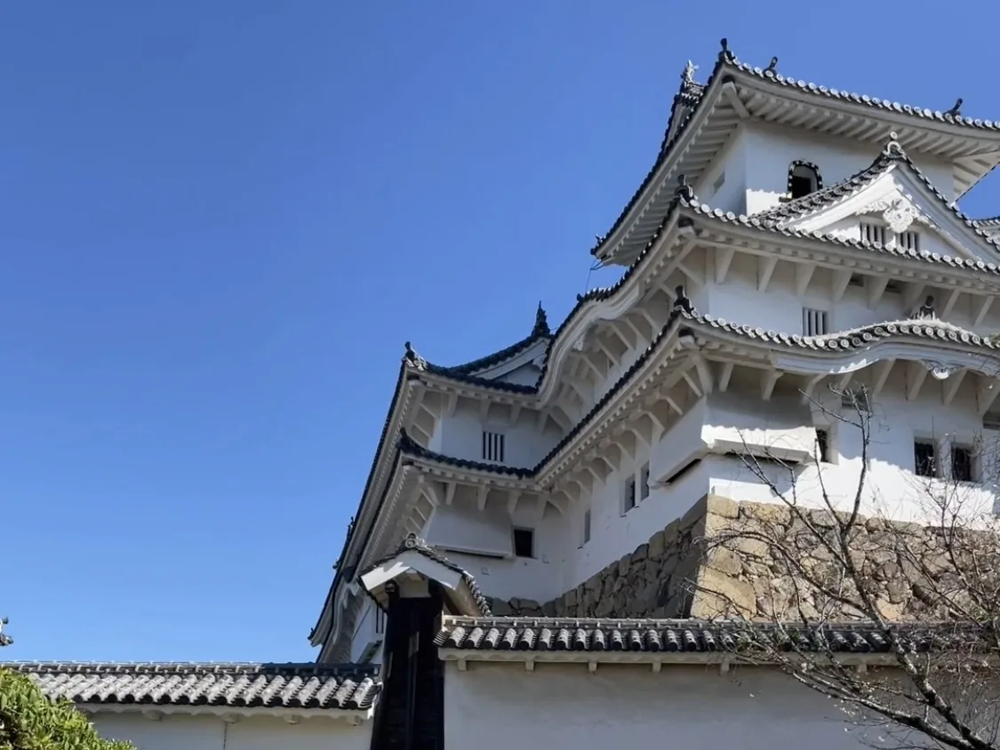
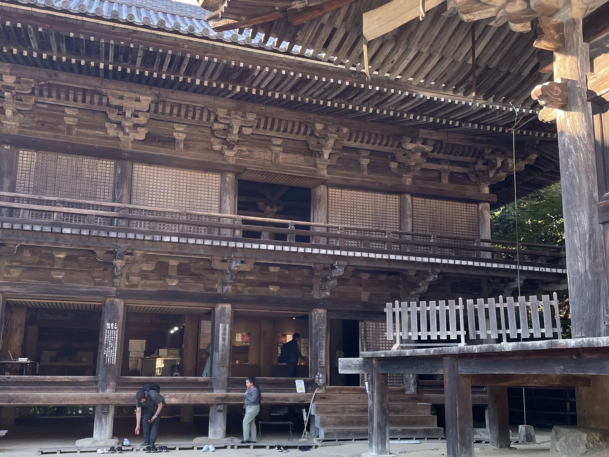
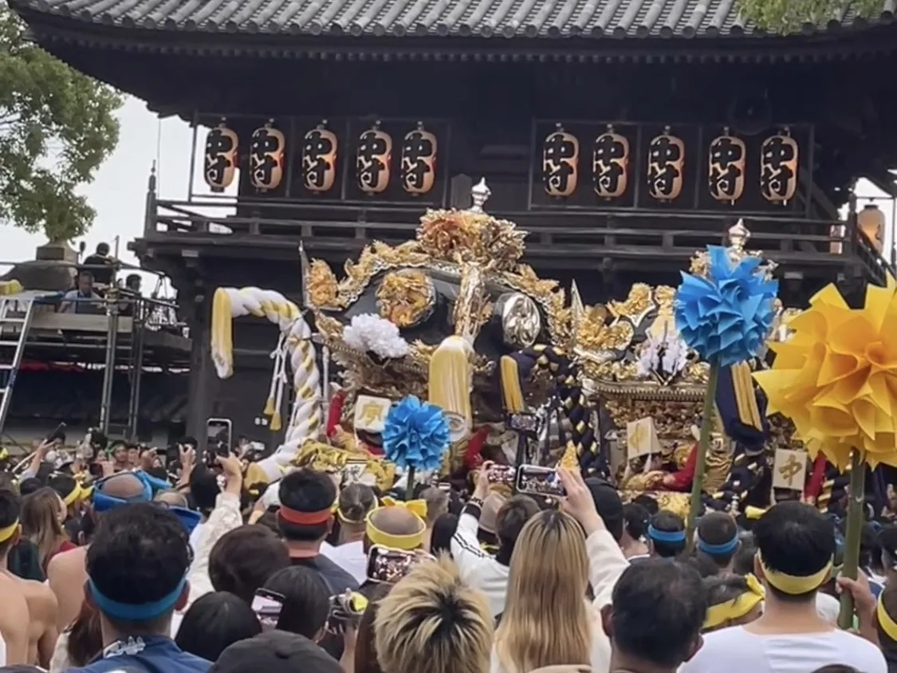
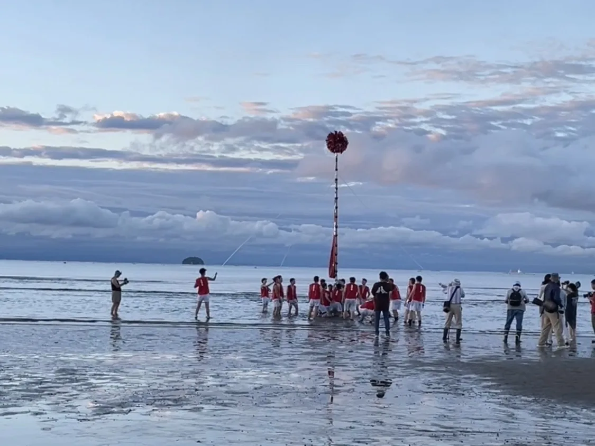
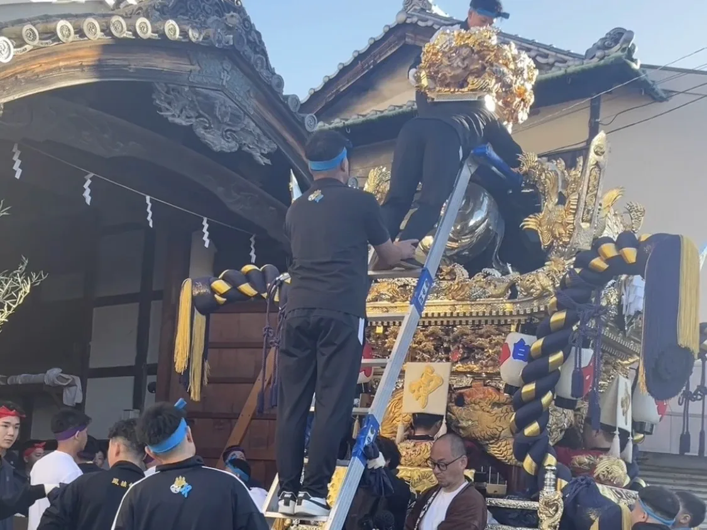
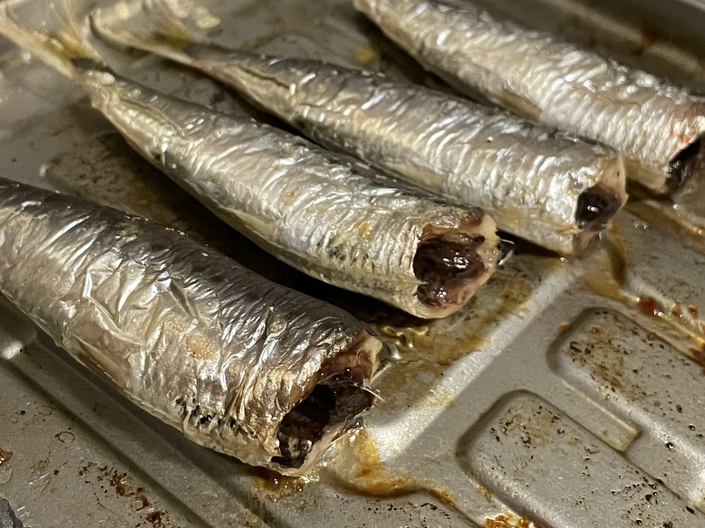
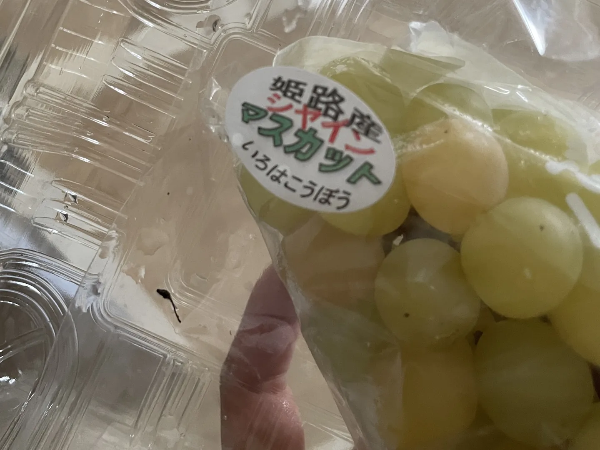
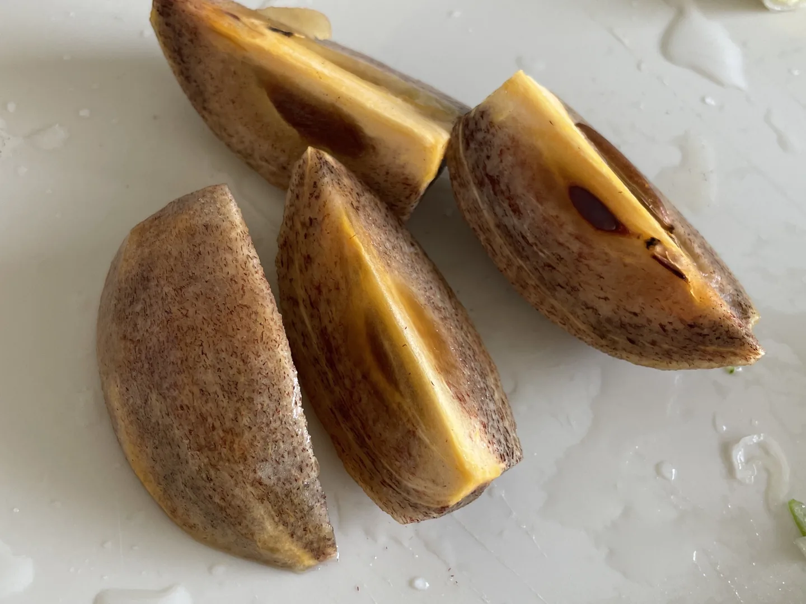
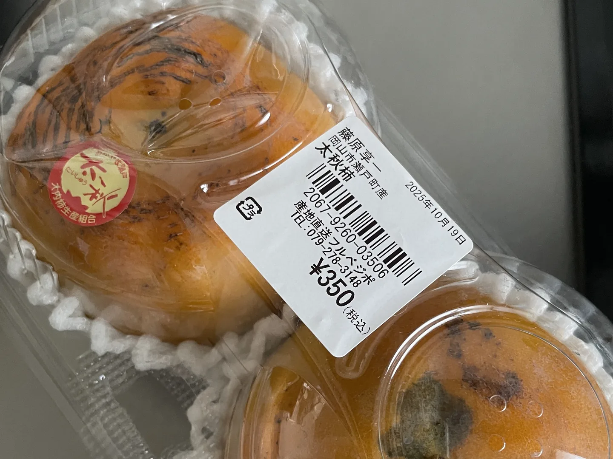

Himeji in October: The Fighting Festival, Moon Viewing and Seasonal Produce

In autumn 2025, I did a work exchange for a month at a strawberry-picking farm on the outskirts of Himeji. Besides visiting the two classic spots, Himeji Castle and Engyoji Temple, I went to festivals big and small (autumn really is festivals everywhere!) and ate my fill of seasonal seafood and fruit.
Himeji Castle: the largest and most structurally complex surviving keep
Japan has only 12 "surviving keeps" left (original castle towers from the Edo period or earlier that have survived without being destroyed by war or disaster), and only 5 of them are designated national treasures: Himeji Castle, Matsumoto Castle, Inuyama Castle, Hikone Castle and Matsue Castle. Himeji Castle isn't just one of them, it's also the largest and most structurally complex.
It was once sold off at a low price and nearly torn down for building materials, escaping only because demolition would have cost too much, and then it also survived the war. What we see today was completed in the early 17th century, more than 400 years ago.
In terms of modern architecture, the height between the castle's floors is like a double-height space, and around the edges there are small platforms you have to climb a few steps to reach, designed for watching and defense. The stairs between floors even have doors that can be shut downward toward the floor. If you're also the kind of person who gets especially excited about structure and details like stairs, Himeji Castle might make you forget the time. Compared with the other national-treasure castles, Hikone and Inuyama, Himeji is really in a completely different league in scale.
- Admission is 2,500 yen per person, open 9:00 to 17:00.

Engyoji on Mount Shosha: the "Mount Hiei of the West"
Engyoji was founded in 966 and is a special head temple (bekkaku honzan) of the Tendai sect.
Because of its deep ties to Mount Hiei, it's called the "Mount Hiei of the West", and its standing and scale are among the top in the Kansai area. It's also the 27th temple of the Saigoku 33 Kannon Pilgrimage, and was once a filming location for the movie The Last Samurai.
From the view on the ropeway ride up the mountain, to strolling the grounds and looking at the temple buildings, it's perfect for slowing down. I went on a weekday afternoon and stayed two hours, and met fewer than 50 people the whole time, so it was very peaceful.
- Admission 500 yen per person, ropeway round trip another 1,200 yen per person, open 8:30 to 18:00 (until 17:00 in winter)
Tendai sect: founded in the early 9th century by the master Saicho in the Heian period. Although it originates from Mount Tiantai in China, in Japan it developed a unique system combining "the perfect teaching, esoteric Buddhism, Zen and the precepts", with Enryakuji on Mount Hiei as the head temple. In Japan today, Tendai believers may be fewer than those of the Jodo or Shingon sects, but nearly all the founders of the Kamakura new Buddhism (Jodo, Jodo Shinshu, Zen, Nichiren and so on) came from Mount Hiei, so Mount Hiei is seen as the cross-sectarian "mother mountain of Japanese Buddhism", with a very high standing in scholarship, culture and history.

Nada no Kenka Matsuri: the "fighting festival" that draws tens of thousands of pilgrims
The autumn grand festival of Matsubara Hachiman Shrine, "Nada no Kenka Matsuri" (灘のけんか祭り), is held every year on 10/14 to 15, and is the biggest festival I've ever taken part in. The Japanese word "kenka" (喧嘩) literally means "fight", and the core of the festival is carrying mikoshi (portable shrines) and festival floats and smashing them into each other.
Day one: Yoimiya (the eve festival)
At 11 in the morning, the floats (yatai) of seven villages set out on a parade from their own villages, then gather together at the shrine. The afternoon "neriawase" is the peak of the day: first they collide in the plaza in front of the shrine's two-story gate, villages competing and showing off their might. Then they move inside the shrine to collide as a ritual offering performed for the gods, presenting unity and strength as tribute. Finally, the grand neriawase in the plaza is a free-for-all of "so satisfying! (?)".

These floats are finely made like works of art and cost a fortune, so the so-called collisions are actually "gentleman's collisions", touching without really hitting, with a commander blowing a whistle and raising a flag to signal two floats to separate, like calling boxers back to their corners in a boxing match. Before a collision starts, two blocks of wood are struck together with a crisp sound, like a "ready... get ready~" warning.
＊The floats (also translated as "mountain carts") carried by each village are called "yatai (屋台)" in Japanese. They're mobile stages for offering performances to the gods. No god sits inside, but 4 people who beat the taiko and control the rhythm, called "norikoshi (乗子)", usually boys aged 10 to 15, symbolizing the village's future and purity. During the festival their feet can't touch the ground, and someone has to be holding them the whole time.
The mikoshi, which do carry a god, are called "mikoshi (神輿)" in Japanese.
Day two: Honmiya, the "for real!" collisions
At 6 in the morning there's a purification ritual at the seaside, ending around 6:20, for the people who will carry the mikoshi that day. The mikoshi look similar to the floats but plainer, and a god is really enshrined inside: Emperor Ojin, Empress Jingu and Himegami, in three mikoshi (Ichinomaru, Ninomaru and Sannomaru). And the mikoshi collisions really do send wood chips flying.

At 11 in the morning, the mikoshi first have a round of collisions in the plaza in front of the shrine and inside the shrine. The space is small so you can watch up close, and it's said to be quite shocking.
At 2 p.m., the procession moves to the practice ground at the foot of Otabiyama for a second round of collisions. This practice ground is as huge as giant stairs, and only when you see it with your own eyes do you understand that the "tens of thousands of participants" in the info isn't an exaggeration.
The picnic-style seats on the steps are hereditary, so ordinary visitors can only stand on top of Otabiyama and look from afar, taking in the crowd filling the whole stepped stand at the same time, which is also a highlight for visitors.

Around 4 in the evening, the mikoshi and floats climb Otabiyama together. The final steep stretch is about 400 to 500 meters. The info says the mikoshi weigh at least 300 kg and the floats 2 tons, so this last mile is the ultimate test of endurance for those carrying.
＊The festival has a special verb "neru (練る)", meaning "to shout chants (like "Yoiyasa"), sway the mikoshi in rhythm and stride forward full of spirit". The preparation before carrying is swaying back and forth to build up momentum, which, besides using leverage physically, also carries a sense of provoking and intimidating the other side.
Floats going back into storage: another kind of solemnity beyond the excitement
If you happen to pass by the shrine during the festival, you might also see the floats being put back into their storage houses (yataigura). The atmosphere is solemn and careful, but not stern. It's not an exciting moment, but you can feel how much the locals value tradition.
The storage house is small and the float can't go straight in, so before it goes in, you'll see the onion-shaped metal ornament at the top, the "giboshi", taken off, and the carved wooden base below it, the "roban", carried down the stairs on someone's head. The giant ropes hanging from the four corners, the "datezuna", are also pulled taut and fixed.
Giboshi (擬宝珠): the metal ornament at the very tip of the float.
Roban (露盤): the delicate carved wooden base below the giboshi, usually carved with scenes of slaying evil dragons, historical heroes or myths, weighing 20 to 30 kg.
Datezuna (伊達綱): giant twisted ropes hanging at the four corners of the float, made of precious brocade thread and gold thread, usually with gorgeous gold tassels at the ends. They're a symbol of the village's wealth, and how beautifully and forcefully they swing is also used to judge how well the float is being carried.

Moon viewing and the pottery fair: seasonal events around Himeji Castle
The Himeji Castle moon viewing (Mid-Autumn Festival, the 15th of the lunar month) is a free event. Himeji Castle is lit up, there are stage performances, and people can find a spot on the lawn for a picnic. There are also local sake stalls, and I bought a set of "plastic cup + 3 pours of sake" for 700 yen, on an "honor system" basis: you take your cup to the stall and fill it up yourself, and the staff usually fill it to the brim. I saw Japanese people bringing food containers to fill with sake, clearly well prepared. That was how it was in 2025, and I don't know if it's the same every year.

The National Pottery Fair (early November) is held in the plaza of Otemae Park in front of Himeji Castle, and every prefecture's "○○-yaki" sets up a stall. Prices aren't especially high and it leans toward the general public, with relatively fewer pieces from small studios, but seeing all kinds of local specialty pottery in one place is still well worth a visit. It's quite crowded, a bit shoulder to shoulder.

Himeji food: seasonal local produce
Autumn catch from the Seto Inland Sea
Himeji faces the Seto Inland Sea and has a rich catch, and I bought everything at the supermarket "Halows".
- Sardines (真鰯): small fish you eat bones and all. Many of the small-fish dishes you eat in Japan are this.
- Red tongue sole (赤舌ひらめ): both eyes on the same side, with delicate flesh, and simply simmered in sauce it's really good.
- Barracuda (カマス): the texture is a bit like tilapia but softer, with a narrow body but thick flesh.
- Rabbitfish (バリ／アイゴ): the skin is smooth as if it has no scales. Be careful, since the dorsal, anal and pelvic fins all have venomous spines, so you have to handle it with care.
- Pacific saury (秋刀魚): 2025 was called a "once in ten years" fat year, and simply pan-fried it's pure happiness.
- Shirasa shrimp (シラサエビ): it's rare to see shrimp in a Japanese supermarket that are fresh, head-on, and still moving!
- Swimming crab (渡り蟹): not only cheap but really tasty, my top recommendation as a representative crab. I even found it tastier than the matsuba crab I ate by the Sea of Japan! It's around 1,000 yen (depending on size), and when it's half price it's so cheap you want to cry and still fresh. Just steamed it's sweet and fresh with plenty of meat, super satisfying!



Autumn fruits and vegetables
Grapes: Because of geography, the grapes you buy in western Hyogo, where Himeji is, mostly come from Okayama (though Japan's highest-producing and best-known grape region is actually Yamanashi!). I ate five, six, seven, eight kinds, but the one I recommend most is the everywhere-you-look, uniquely fragrant "Shine Muscat" (シャインマスカット). It's usually green, but at the farm co-op supermarket "JA Hyogo Nishi Shunsaigura Shosha" I found a paler green variety, even with a pink-purple gradient, that was even better than the green one, so amazing!
I ate a lot of varieties, but I'm no expert and don't remember much about them, so please go and buy some yourself~ Generally speaking, green grapes can nearly all be eaten with the skin on, and most are seedless.
＊I bought most of mine at a local shop called "Sanchi Chokusou Furubejipo", which had more than ten varieties at the time, so many



{kind=link}
{kind=link}
{kind=link}
{kind=link}
{kind=link}
{kind=link}
{kind=link}
{kind=link}
- Persimmons: persimmons are also an autumn fruit, and there are so many persimmon trees along the roads, full of fruit, giving you wicked thoughts. Later a Japanese person told me "you can pick them freely~", so I tried picking at a spot where the persimmon tree didn't seem to belong to anyone, and they were as good as the ones you pay for!
The most common is Fuyu, and there's also Fude persimmon. When you cut open a Fude persimmon the inside is a dark orange that looks like it's gone bad, and that's normal. If you see houses drying persimmons, they're mostly astringent varieties (like "Mino persimmon / shibugaki") meant only for drying and can't be eaten raw, and farm co-op supermarkets usually label them with a warning.


- Chestnuts: the chestnuts common in Japan are big. Sometimes you run into little stalls roasting chestnuts, and the thin astringent skin clinging to the flesh is super hard to peel. Japanese people said you can eat it with the skin and don't need to peel it clean.


Conclusion
Himeji Castle + Engyoji are a must. A quick trip could do one in the morning and one in the afternoon (2 to 3 hours each), but I'm old, and I can only fit one thing into a day.
If you happen to go in mid-October, I strongly recommend watching the "Nada no Kenka Matsuri", and the transport is convenient too.
Autumn really is the season of appetite, and not seriously eating the seasonal local produce would be a disservice to yourself.
KeywordsHyogoHimejiHimeji CastleEngyojiNada no Kenka Matsurimoon viewinggrapespersimmonsSeto Inland Sea seafood